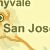

- Click the zoom and pan buttons to get closer to your exact location
- Use the AERIAL and ROAD buttons to switch between terrain and roadmap view.
- Click the interim pesticide use limitation area to get a quick list of pesticides limited in your area.
This mapper is intended to assist pesticide users' understanding of certain interim pesticide use limitations contained in the Court's Order and Stipulated Injunction and which apply to certain pesticides in certain geographic areas within the state of California. There are some exceptions to the interim use limitations which may be found on EPA's Interim Use Limitations page. If you have not already done so, you should review the Background and Exceptions information on that page to determine whether the interim limitations apply to your use of a pesticide.
Because interim use limitations may be changed or deleted as EPA continues to review the 75 pesticide active ingredients, pesticide users should visit this site before, but close to the time of pesticide use to determine whether the interim use limitations apply to your use of the specific pesticide in a specific geographic area. EPA will update this site when limitations change.
Map Explanation
|  |
Area Where Interim Pesticide Use Limitations May Apply |

|
Interim Pesticide Use Limitation Area |
|
Checkerspot Butterfly Habitat |